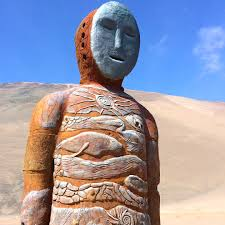
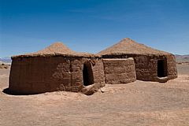
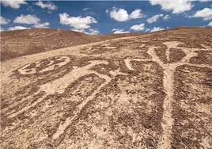
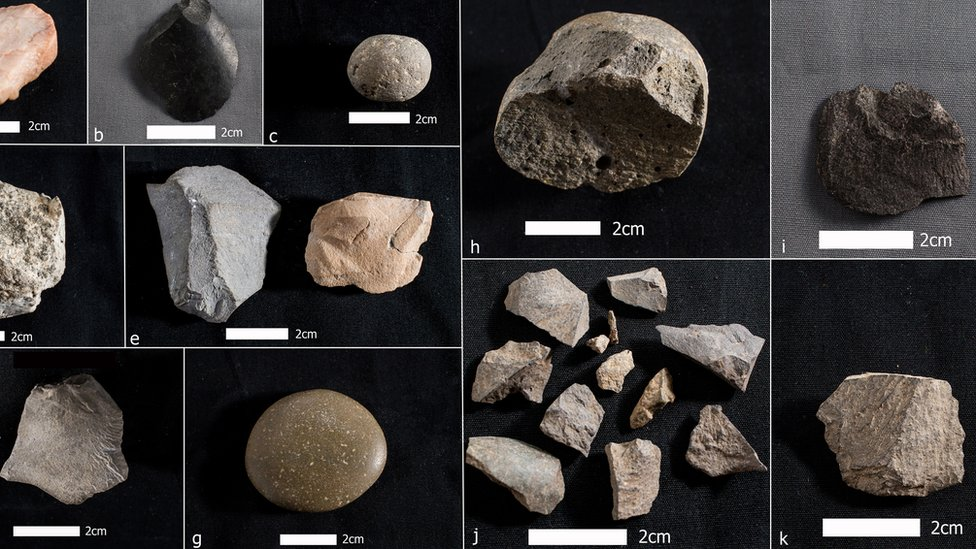
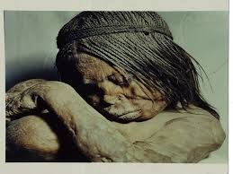

Moai de Rapa Nui

Moai de Rapa Nui
Las enormes estatuas de piedra volcánica son el símbolo más famoso de la isla y representan antepasados tutelares.
Fecha estimada: 1250 d.C. – 1500 d.C.Un recorrido por los hallazgos arqueológicos de la costa, los valles y la misteriosa Isla de Pascua.
Más información sobre las reliquias arqueológicas de Chile...
Las enormes estatuas de piedra volcánica son el símbolo más famoso de la isla y representan antepasados tutelares.
Fecha estimada: 1250 d.C. – 1500 d.C.
Los primeros cuerpos momificados de América, preservados en el desierto costero del norte chileno hace más de 7,000 años.
Fecha estimada: 7000 a.C. – 1500 a.C.
Un complejo arqueológico prehispánico en el desierto de Atacama que muestra viviendas circulares y un ritual comunitario antiguo.
Fecha estimada: 400 a.C. – 900 d.C.
Paneles con figuras humanas y geométricas talladas por los antiguos habitantes del desierto de Atacama.
Fecha estimada: 1000 a.C. – 500 a.C.
Uno de los asentamientos humanos más antiguos de América, con restos de viviendas y alimentos que prueban la presencia humana hace casi 14,000 años.
Fecha estimada: 14,500 a.C. – 13,000 a.C.
Restos ceremoniales encontrados en la cumbre del cerro El Plomo, que revelan rituales de ofrenda de los cazadores de altura.
Fecha estimada: 1450 d.C. – 1500 d.C.